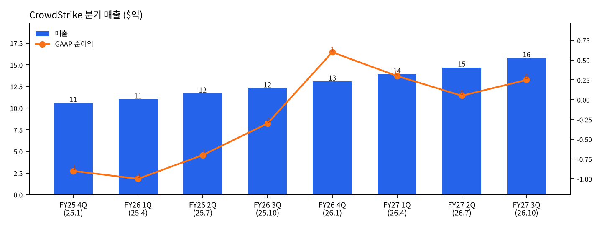
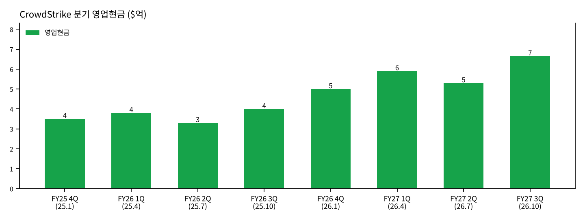
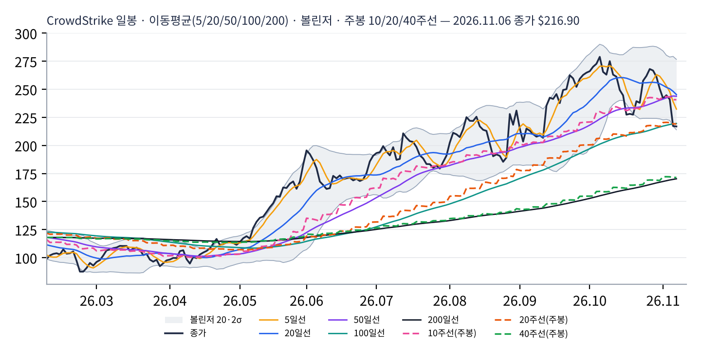
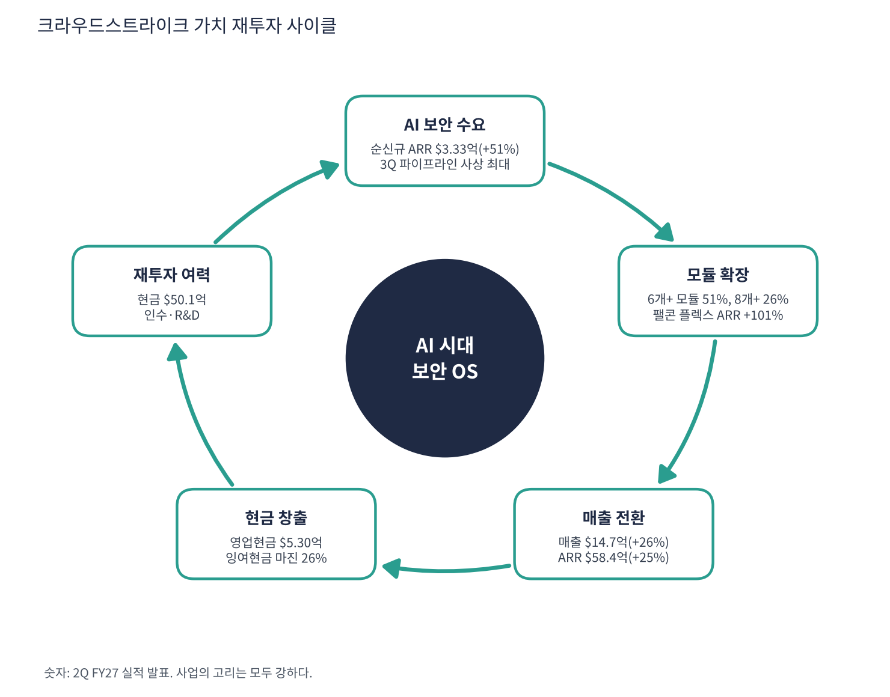

CrowdStrike는 클라우드 기반 사이버 보안 회사다. 노트북·서버에 설치하는 가벼운 '센서'로 해킹을 탐지하고 막는 엔드포인트 보안(EDR)에서 출발해 클라우드 보안·아이덴티티 보안·보안 로그 분석(SIEM)·위협 정보·관리형 탐지 서비스(MDR)까지 넓혔다. 2024년 7월 업데이트 오류로 전 세계 윈도우 PC 수백만 대를 멈추게 한 사고를 겪었지만 고객 이탈은 예상보다 작았다. 이번 분석 대상 중 부채로 투자하지 않고 반복 매출(ARR)로 성장하는, 이익이 GAAP로는 아직 '0 근처'인 고배수 소프트웨어다.
| 항목 | 내용 |
|---|---|
| 종목 | CrowdStrike Holdings, Inc. (CRWD) · NASDAQ · 사이버 보안 소프트웨어 · 2011년 설립 · 본사 텍사스주 오스틴 (주가는 주식 분할 반영 기준) |
| 밸류에이션 | P/S 38.6배 · GAAP 이익이 거의 없어 PER은 의미 없음 (11/27 스캐너, 종가 $211.22) |
| 최근 분기(3Q FY27) | 매출 $15.8억(+28%), 구독 $15.0억(+29%), ARR $62.6억(+27%), 순신규 ARR $4.19억(+58%, 사상 최대) |
| 이익·현금 | GAAP 영업손실 -$0.01억(손익분기), 순이익 $0.25억, 비GAAP 영업이익 $4.06억, 영업현금 $6.65억, 잉여현금 $4.74억(모두 사상 최대), 현금 $53.7억 |
| 가이던스 | 4Q 매출 $16.38~16.44억, FY27 매출 $60.78~60.84억, ARR $67.12~67.16억, 비GAAP EPS FY27 $1.28(4Q $0.36). 순신규 ARR 성장 전망 45%(중간값) |
| 모듈 채택 | 구독 고객 중 6개 이상 모듈 52%, 7개 이상 36%, 8개 이상 26% |
| 다음 실적 | 4Q FY27·연간 실적: 2027년 3월 초 예정(회사 확정 일정은 확인 필요, 회계연도는 1월 말 종료). 별도로 Zscaler 인수 마감 일정도 확인 필요 |
| 직책 | 인물 | 역할·특징 |
|---|---|---|
| 창업자·CEO | 조지 커츠 | 2011년 창업. "모든 기업이 AI 위에서 돌아갈 것이고 그것을 지키는 것이 회사 역사상 가장 큰 기회"라는 메시지의 주인 |
| CFO | 버트 포드베어 | 가이던스·잉여현금·순신규 ARR 설명 담당. 3분기에 사상 최대 영업현금($6.65억)과 잉여현금($4.74억)을 냈다 |
경영 스타일: '플랫폼 하나에 모듈을 계속 얹고, 사고는 빠르게 수습하며, 지표는 ARR로 말한다'. 2024년 7월 사고 이후 고객 보상과 신뢰 회복에 비용을 쓰면서도 성장률을 20%대 중반으로 유지했고, 2분기에 전망을 34%로 올린 데 이어 3분기에 10.6%p 더 올려 45%(중간값)로 제시했고, 같은 날 Zscaler를 전액 주식으로 사들이는 $439억 규모 인수를 발표했다. 경영진은 GAAP 이익보다 ARR·순신규 ARR·잉여현금을 먼저 말하는 편이어서, GAAP 기준의 PER과 PEG는 이 회사를 평가하는 도구가 되기 어렵다.
가벼운 센서 하나로 엔드포인트를 지키고, 같은 플랫폼에서 클라우드·아이덴티티·SIEM·위협 정보 모듈을 켜는 구조다. 고객이 쓰는 모듈 수가 늘수록 계약이 커지고 경쟁사로 옮기기 어려워진다.
사람·기계·AI 에이전트의 신원을 지속 검증하고, AI 에이전트용 탐지·대응(AIDR)을 클라우드 AI 게이트웨이로 넓히는 것이 목표다. 팔콘 플렉스(통합 구독) ARR이 2분기 기준 $22.9억(+101%)까지 커졌다(3분기 발표문에는 수치가 없다).
다음 실적발표(4Q FY27, 2027년 3월 초 예정)는 세 가지 질문에 답하는 자리다.
1. 순신규 ARR 가속(+58%)이 4분기에도 이어지나?
2. Zscaler 인수가 순조롭게 마감되고 통합 부담이 관리되나?
3. 잉여현금 마진이 높은 수준을 지키나?
한 줄 판정 규칙: 첫 질문의 순신규 ARR이 가이던스대로 유지되면 약한 고리가 풀리고, 둘째 질문에서 인수 마감 시기와 조건이 불투명하면 사이클의 약점이 남는다.
일정: 4Q FY27 실적 발표일은 확인 필요. 위 현재값은 3Q FY27 발표(2026.11.23) 기준이다.
| 분기 (종료월) | 매출 | YoY | 매출총이익률 | GAAP 영업이익 | GAAP 순이익 | EPS | 조정 EPS | 영업현금 | 특이 사항 |
|---|---|---|---|---|---|---|---|---|---|
| FY25 4Q (25.1) | $10.6억 | – | 74.2% | -$0.8억 | -$0.9억 | -0.35* | 0.26 | $3.5억 | |
| FY26 1Q (25.4) | $11.0억 | – | 74.0% | -$1.2억 | -$1.0억 | -0.42 | 0.18 | $3.8억 | 구조조정 |
| FY26 2Q (25.7) | $11.7억 | – | 73.6% | -$1.1억 | -$0.7억 | -0.07 | 0.23 | $3.3억 | |
| FY26 3Q (25.10) | $12.3억 | +22% | 75.0% | -$0.7억 | -$0.3억 | -0.14 | 0.24 | $4.0억 | |
| FY26 4Q (26.1) | $13.1억 | +24% | 76.2% | $0.1억 | $0.6억 | -0.02* | 0.28 | $5.0억 | GAAP 흑자 전환 |
| FY27 1Q (26.4) | $13.9억 | +26% | 75.3% | -$0.3억 | $0.3억 | 0.11 | 0.28 | $5.9억 | |
| FY27 2Q (26.7) | $14.7억 | +26% | 74.6% | -$0.3억 | $0.05억 | 0.01 | 0.31 | $5.3억 | 순신규 ARR 최대 |
| FY27 3Q (26.10) | $15.8억 | +28% | 76% | -$0.01억 | $0.25억 | 0.02 | 0.34 | $6.65억 | 순신규 ARR 최대, Zscaler 인수 발표 |
EPS는 희석 GAAP 주당순이익이고, 조정 EPS는 트레이딩뷰 실적 탭의 Reported EPS다. 애널리스트 컨센서스와 같은 기준으로, 회사가 일회성 비용·주식보상·무형자산 상각 등을 제외해 발표한 값이다. 회사가 조정 EPS를 발표하지 않는 종목·분기는 –로 표시했다(3Q FY27 값은 회사 발표문 기준, 2026.11.28 조회).
EPS는 희석 주당순이익(GAAP, SEC 제출 자료 기준)이다. *는 4분기를 '연간 EPS − 1~3분기 합'으로 계산한 근사치라 실제 발표값과 다를 수 있다.


흐름 요약: 분기 매출이 2년 동안 $11.7억에서 $15.8억으로 35% 늘었고 최근 3분기 성장률은 +26% → +26% → +28%로 가속했다. 매출보다 먼저 움직이는 순신규 ARR이 +58%라 다음 분기에도 성장률이 더 높아질 수 있다. GAAP 영업이익은 -$0.01억으로 사실상 0이고, 비GAAP 영업이익 $4.06억과의 차이 약 $4억이 주식 보상과 인수 관련 비용이다. 영업현금은 분기 $6.65억으로 사상 최대다. YoY는 확인된 분기만 표시했다.
| 구성 | 돈을 버는 방식 | 3Q FY27 | 비고 |
|---|---|---|---|
| 구독 | 팔콘 플랫폼 모듈(엔드포인트, 클라우드, 아이덴티티, SIEM, 위협 정보, MDR 등)을 연간 구독. 매출의 95% | $15.0억 (+29%) | 구독 GAAP 매출총이익률 79% |
| 전문 서비스 | 사고 대응, 컨설팅 | 약 $0.8억(내 계산) | 구독의 도입 입구 역할 |
| 팔콘 플렉스 | 고객이 크레딧을 사서 필요한 모듈을 자유롭게 쓰는 통합 구독 | ARR $22.9억 (+101%, 2Q 기준) | 3Q 발표문에 수치 없음. 2Q 전체 ARR $58.4억의 약 39% |
성장 공식은 '고객 수 × 고객당 모듈 수'다. 구독 고객의 52%가 6개 이상 모듈을 쓰고 26%가 8개 이상을 쓴다. 팔콘 플렉스는 이 확장을 쉽게 만들어, 고객이 한 플랫폼에 보안을 통합할수록 경쟁사로 옮기기 어려워진다. 순신규 ARR은 신규 고객과 기존 고객 모두에서 사상 최대였고 달러 기준 총·순 유지율도 올랐다.
커츠 CEO는 2분기 메시지에서(3분기에는 "역사상 최고의 분기"라고 표현) AI 도입에는 보안이 필요하며 모든 기업이 AI 위에서 돌아갈 것이라고 했다. 수요 변화를 '미토스 모멘트'라 불렀는데, 고성능 AI 모델이 해킹에 쓰일 수 있다는 우려가 보안 지출을 키운 시점을 가리키는 것으로 해석된다(발언 문맥에 따른 내 해석).
| 축 | 최근 움직임 |
|---|---|
| AI 에이전트 보안 | 사람·기계·AI 에이전트 신원을 지속 검증, AI 탐지·대응(AIDR)을 데이터브릭스·구글 클라우드·애저의 AI 게이트웨이로 확장 |
| 플랫폼 통합 | 엔드포인트·클라우드·아이덴티티·데이터를 하나로, SIEM에서 기존 업체 대체 |
| 파트너십·인수 | AWS, 세레브라스, 슈바르츠 디지츠(유럽, XM 사이버 기술 인수). 트레이딩뷰 뉴스는 피들러·드레드노드 인수도 전했다(헤드라인 기준). 3분기에는 Zscaler를 전액 주식 $439억에 인수하기로 발표했다 |

| 이동평균 | 값 | 종가 대비 | 해석 |
|---|---|---|---|
| 5일선 | $220.41 | +5.3% | 현재가가 아래 |
| 20일선 | $229.75 | +9.8% | 현재가가 아래 |
| 50일선 | $245.24 | +17.2% | 현재가가 아래 |
| 100일선 | $225.23 | +7.6% | 현재가가 아래 |
| 200일선 | $177.82 | -15.0% | 현재가가 위 |
52주 고점 $286.99(2026-10-06), 52주 저점 $85.68(2026-02-23). 종가 $209.30(2026-11-25) 기준이다.
| 규칙 | 기준 | 현재 값 | 신호 |
|---|---|---|---|
| 장기 추세 필터 | 종가 vs 200일선 | $209.30 > $177.82 | 매수 |
| 중장기 교차 | 50일선 vs 200일선 | $245.24 > $177.82 | 매수 |
| 단기 교차 | 20일선 vs 50일선 | $229.75 < $245.24 | 매도 |
| 돈키언 채널 | 55일 고가 $286.99 / 저가 $194.70 | 중간값 $240.84 아래 | 매도 |
| 1개월 모멘텀 | 21거래일 수익률 | -21.9% (기준 $268.02) | 매도 |
| 3개월 모멘텀 | 63거래일 수익률 | -8.2% (기준 $227.96) | 매도 |
| 6개월 모멘텀 | 126거래일 수익률 | +24.8% (기준 $167.75) | 매수 |
| 12개월 모멘텀 | 252거래일 수익률 | +65.2% (기준 $126.70) | 매수 |
| 종합 (8개 평균) | +0.00 | 중립 |
해석: 8개 신호 중 매수 4개, 매도 4개(점수 +0.00, 중립)다. 14일 ATR $15.30 (7.3%).
| 가격·조건 | 무엇이 바뀌나 | 의미 |
|---|---|---|
| $177.82 | 종가 vs 200일선 | 이탈하면 매수 → 매도 |
| $268.02 | 1개월 기준가 | 돌파하면 매도 → 매수 |
| $227.96 | 3개월 기준가 | 돌파하면 매도 → 매수 |
| $167.75 | 6개월 기준가 | 이탈하면 매수 → 매도 |
| $126.70 | 12개월 기준가 | 이탈하면 매수 → 매도 |
| $240.84 | 돈키언 중간값 | 돌파하면 매도 → 매수 |
| 50일선이 200일선 아래로 | 50/200 교차 | 매수 → 매도 |
| 구분 | 가격대 | 근거 |
|---|---|---|
| 저항 1 | $220.41 | 5일선 |
| 저항 2 | $225.23 | 100일선 |
| 지지 1 | $194.70 | 55일 저점 |
| 지지 2 | $177.82 | 200일선 |
점수는 +0.00(중립)다. 14일 ATR은 $15.30로 현재가의 7.3%다. 가까운 저항 $220.41을 종가로 넘는지와 가까운 지지 $194.70를 지키는지가 신호 전환의 기준이다. Zscaler 인수 발표(11/23) 이후 주가 변동이 커졌다. (내 가정, 매매 권유 아님)
| 악재 요인 | 내용 | 강도 |
|---|---|---|
| 밸류에이션 | P/S 약 39배, TTM 잉여현금 대비 약 130배(내 계산). 성장 둔화 신호에 민감하고 P/S 25배 수준이면 -31% | 높음 |
| 경쟁 | 마이크로소프트(디펜더), 팔로알토, 센티넬원, 구글(위즈) | 중간 |
| 운영 리스크 | 2024년 7월 사고처럼 업데이트 오류가 대규모 장애로 이어질 위험 | 중간 |
| Zscaler 인수 | 전액 주식 $439억(교환비 1.135주). 주식 수 증가와 통합 실패 위험, 마감 시점·규제 심사는 확인 필요 | 높음 |
| 주식 보상 | GAAP 적자의 주원인(분기 약 $4억). 희석 관리 필요 | 참고 |
| 티커 | 회사 | PER(TTM) | PEG | P/S | EPS 성장(YoY) |
|---|---|---|---|---|---|
| CRWD | CrowdStrike | 의미 없음(2,278배) | – | 38.62배 | – |
| PANW | Palo Alto Networks | 568.4배 | – | 23.76배 | -61% |
| FTNT | Fortinet | 44.1배 | 1.63 | 12.49배 | +26% |
| ZS | Zscaler | 적자 | – | 10.75배 | -87% |
| OKTA | Okta | 123.7배 | 1.26 | 11.53배 | +95% |
| MSFT | Microsoft | 25.7배 | 0.72 | 10.66배 | +36% |
적자는 PER 산출 불가를 뜻한다. PEG 칸이 '–'인 종목은 스캐너 값이 없거나 음수다. Palo Alto의 PER은 일회성 요인으로 비정상적으로 높다(내 해석).
비교 결론: 보안 동종 중 CrowdStrike의 P/S 38.6배는 가장 높고, 인수 대상인 Zscaler(10.8배)의 약 3.6배다(내 계산). 전액 주식 인수라 CrowdStrike가 더 비싼 주식으로 상대를 사는 구조이며, 그만큼 주가 하락이 인수 조건에 영향을 줄 수 있다(내 해석). 이익이 확인된 Microsoft(PER 25.7배)와 달리 CrowdStrike는 ARR 성장 기대에 값이 매겨져 있다.
CrowdStrike는 현금이 쌓이는 회사다. 현금 $50.1억에 분기 영업현금 $5억대라 '런웨이'(남은 현금으로 몇 년 버티나) 개념이 필요 없다. 대신 매출의 약 40배인 주가가 어느 배수까지 내려갈 수 있는지를 점검했다.
| 지표 | 값 | 계산·출처 | 해석 |
|---|---|---|---|
| 현금성 자산 | $53.7억 | 3Q FY27 발표 | TTM 영업현금($22.9억)의 약 2.3배 |
| 영업현금흐름 (TTM) | $22.9억 | FY26 4Q ~ FY27 3Q 합 (위 표) | TTM 매출 $57.5억의 약 40%(내 계산) |
| 잉여현금흐름 | 3Q $4.74억 (매출의 약 30%) | 회사 발표 | 스캐너 TTM $17.05억 |
| 주가 / 잉여현금 (연 환산) | 약 130배 | TTM $17.05억(스캐너), 연 환산 기준 | 이익이 아니라 성장 기대에 값을 매기는 구간 |
| 런웨이 | 해당 없음 | 현금 흐름이 흑자 | 자금 조달 압박 없음 |
| 가정 P/S (FY27 매출 $60.8억 기준) | 주가 | 현재($211.22) 대비 |
|---|---|---|
| 36.5배 (현재, 가이던스 기준) | $211.22 | – |
| 30배 | 약 $174 | -18% |
| 25배 | 약 $145 | -31% |
| 20배 | 약 $116 | -45% |
P/S 30·25·20배는 내가 둔 스트레스 가정이다. 주식 수는 현재 값으로 고정했다(Zscaler 인수로 늘어나는 주식은 반영하지 않았다). 2월 저점 $86은 소프트웨어 업종 'AI 대체 우려' 때의 가격이며 당시 P/S는 현재보다 훨씬 낮았다.
| 기준 | 매출 | P/S | 비고 |
|---|---|---|---|
| 트레이딩뷰 표시값(11/27 스캐너) | – | 38.6배 | |
| TTM 4분기 합 | $57.5억 | 38.6배 | 매출 $57.5억 |
| FY27 가이던스 중간값 | $60.8억 | 36.5배 | 회사 가이던스 |
| 동종 소프트웨어 | – | – | Palo Alto 23.8, Fortinet 12.5, Okta 11.5, Zscaler 10.8, Microsoft 10.7 |
해석: CrowdStrike의 P/S는 보안 동종(Palo Alto 23.8배, Fortinet 12.5배, Zscaler 10.8배)과 Microsoft(10.7배)보다 크게 높다. 성장률 +28%에 대한 값으로는 비싸지만, 순신규 ARR 가속과 잉여현금 마진 약 30%가 받쳐 주는 점이 단순한 고배수 성장주와 다르다.
| 지표 | 값 | 판정 |
|---|---|---|
| GAAP 영업이익 (3Q) | -$0.01억 | 손익분기 |
| 비GAAP 영업이익 (3Q) | $4.06억 (약 26%) | 흑자 |
| 영업현금흐름 (3Q) | $6.65억 (약 42%) | EBITDA에 가까운 현금 기준 대용 지표 |
| 주식 보상·인수 비용 | 약 $4억 / 분기 | GAAP과 비GAAP 영업이익 차이 |
| GAAP EBITDA | TTM $3.34억 | 스캐너 값, TTM 매출의 약 5.8%(내 계산). 분기 상각비는 확인 못 해 영업현금으로 보완 |
EBITDA 대신 영업현금(매출의 약 42%)과 비GAAP 영업이익률(약 26%)로 수익성을 본다. 영업현금이 비GAAP 영업이익보다 큰 것은 구독료를 선불로 받기 때문이다(이연 매출).
| 방식 | PER | EPS 성장률 | PEG | 판정 |
|---|---|---|---|---|
| 트레이딩뷰 (GAAP, TTM) | 의미 없음 | – | 산출 불가 | GAAP 순이익이 거의 0 |
| 비GAAP EPS (FY27 가이던스 $1.28) | 약 165배 | 미확인 | 산출 불가 | FY26 비GAAP EPS를 확인하지 못함 |
| PER 30배가 되려면 필요한 순이익 | 30배 | – | – | 매출 30 = $74억 (TTM 잉여현금 $17.05억의 약 4.3배, 내 계산) |
| 잉여현금 기준 PEG (내 가정) | 약 130배 (P/FCF) | 연 +27% 가정(ARR 성장률) | 약 4.8 | 기준 초과 |
| PEG 1.0이 되려면 필요한 FCF 성장률 | 약 130배 | 연 +130% | 1.0 | 현실성 낮음 |
판정: PEG 산출 불가, 대체 지표로도 기준(1.0 이하) 초과. GAAP 이익이 없으니 PEG를 계산할 수 없고, 잉여현금을 이익으로 보고 매출 성장률과 같은 연 27% 성장을 가정해도 약 4.8배다. 이 종목은 PEG가 아니라 순신규 ARR 가속과 업종 재평가로 움직이는 주식이다. 잉여현금 성장률 27%는 내 가정이며 확인된 수치가 아니다.

이 사이클은 하이퍼스케일러형과 달리 빌린 돈이 아니라 고객의 선불 구독료가 원동력이다. 모듈이 늘수록 ARR이 커지고, 늘어난 현금이 연구개발·인수·영업에 재투자되어 다시 모듈이 늘어난다.
| 고리 | 현재 숫자 | 고리 강도 | 약해지는 신호 |
|---|---|---|---|
| ① AI 보안 수요 | 3Q 순신규 ARR $4.19억(+58%, 사상 최대), FY27 순신규 ARR 성장 전망 45% | 강함 | 순신규 ARR 가속 중단 |
| ② 모듈 확장 | 6개+ 모듈 52%, 8개+ 26%, 팔콘 플렉스 2Q +101% | 강함 | 플렉스 크레딧 소진율 하락 |
| ③ 매출 전환 | 매출 +28%, ARR +27% | 강함 | 성장률 20% 아래로 하락 |
| ④ 현금 창출 | 영업현금 $6.65억, 잉여현금 $4.74억(약 30%) | 강함 | 잉여현금 마진 20% 아래 |
| ⑤ 재투자 | 현금 $53.7억, Zscaler 인수는 전액 주식($439억) | 변수 | 대형 인수 통합 실패·주식 수 증가 |
구조: ①~④ 고리는 모두 강하다. 새 변수는 ⑤에서 $439억 Zscaler 인수 통합이고, 운영 리스크(대형 업데이트 사고)도 남아 있다. 이번 분석 대상 중 재무 위험이 가장 작은 사이클이다.